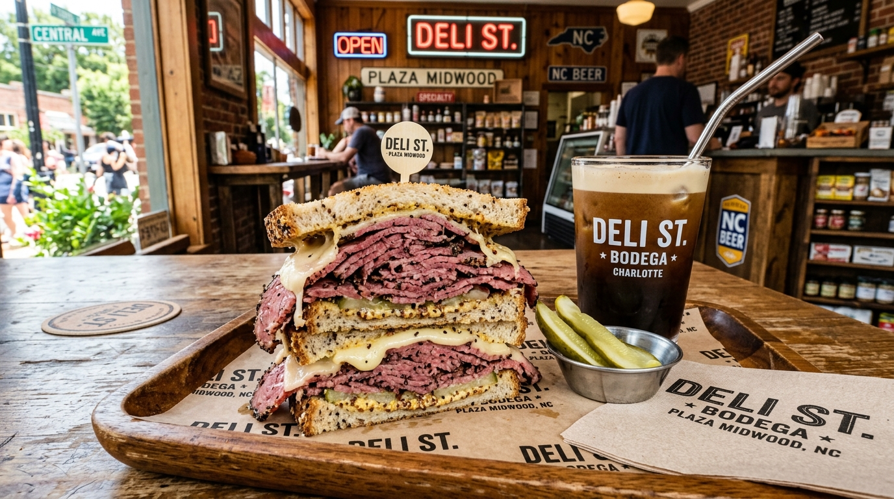

House-Smoked Pastrami on Rye
Brined for 7 days, pepper-rubbed, hickory smoked for 12 hours, stacked high on caraway seeded rye with swiss & grain mustard.
Discover Pastrami Craft →Plaza Midwood's premier urban craft bodega & deli at 2801 Central Ave. Serving stacked house-smoked pastrami on rye, chopped cheese bodega subs, turkey pesto paninis, vegan eggplant parm, and local nitro cold brew.

Stacked house-smoked meats, scratch bodega sauces, and urban Plaza Midwood deli culture.
Brined for 7 days, pepper-rubbed, hickory smoked for 12 hours, stacked high on caraway seeded rye with swiss & grain mustard.
Discover Pastrami Craft →Fresh ground beef seared on the flat-top with onions, chopped with American cheese, shredded lettuce, tomato, & bodega sauce on a toasted hero roll.
Explore Bodega Layering →Avocado hash brown sandwiches, bacon egg & cheese rolls, local nitro cold brew on tap, and plant-based vegan options.
View Full Bodega Menu →